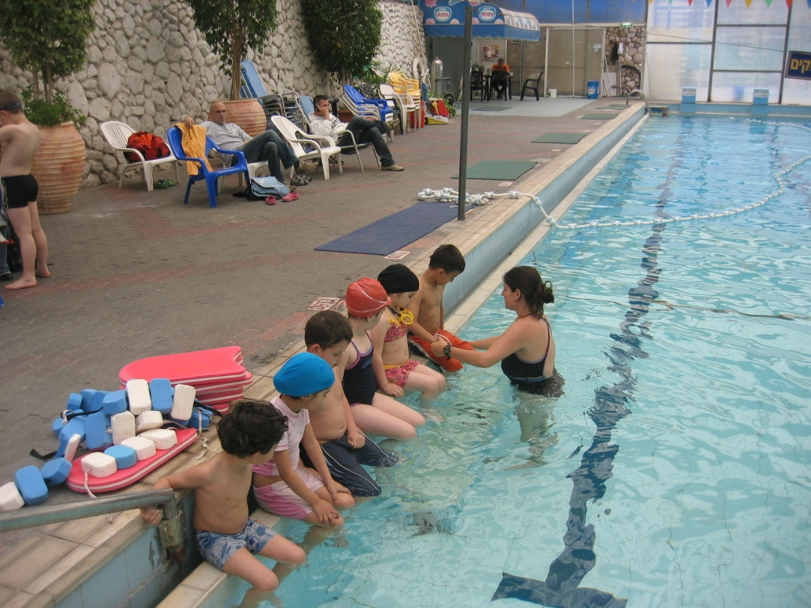

בית הספר לשחייה
בבריכת קאנטרי בית יצחק פועל בית הספר "סגנון" ללימוד שחייה.
בית הספר "סגנון" מעמיד לרשות תלמידיו מורים מוסמכים בעלי נסיון וידע נרחב בתחום השחייה בכלל ולימוד השחייה בפרט. התלמידים זוכים ליחס אישי בקבוצות קטנות ולכן התקדמותם מהירה.
בית הספר לשחייה "סגנון" אינו תחרותי, אנו שמים דגש על ההיבט הבריאותי והחוויתי ויחד עם זאת מכינים לתחרות, ילדים אשר מעוניינים.

בית הספר מציע שיעורים פרטיים לילדים ומבוגרים.
לימודי שחייה מתבצעים בשיטת אלכסנדר ומתאימים גם לטיפולים בכאבי גב.
בית הספר "סגנון" ממוקם בבריכת בית יצחק.הבריכה מקורה, מחוממת ועובדת כל השנה. טמפרטורת המים היא 29 מעלות.
שעות פעילות בית הספר:
בחורף: ימים ב` + ד` - 16:00-17:30
בקיץ: כל השבוע למעט שישי ושבת.
מנהלי בית הספר: חוה קליין ואלכס איטקין.
לפרטים והרשמה: חוה קליין- 052-2203135 חן פרידלנדר- 052-4422462
סגל בית הספר
מנהלי בית הספר: חוה קליין ואלכס איטקין.
צוות המדריכים:
חוה קליין - בוגרת וינגייט, מורה לחינוך גופני ב- 25 שנים האחרונות ומלמדת שחייה.
אלכס איטקין - מאמן נבחרת רוסיה לאולימפיאדת ברצלונה 92 , בעל נסיון עבודה עשיר משנת 79 באימון שחייה תחרותית ולימוד היסודות מהבסיס.בוגר סמינר הקיבוצים בחינוך גופני והוראה.
96-98: מאמן נבחרת הפועל עמק חפר בשחייה, מייסד ומנהל ב- 8 השנים האחרונות את בית הספר.
ורד כספי - בוגרת סמינר הקיבוצים בחינוך גופני והוראה. מדריכת שחייה ושחיית תינוקות.
פאבל טורנר - בעל תואר ראשון בהוראה, בחינוך גופני.בעל נסיון עבודה כמדריך שחייה של כ- 6 שנים.
שחייה למתחילים
בית הספר מתמחה בלימוד שחייה למתחילים. מתחילים בסגנון החזה, ולפי קצב ההתקדמות משלבים חתירה וגב. מבצעים תריגי הליכה במים, ציפה, נשימה, תזמון תנועות והקניית בטחון בבריכה
השחייה מפתחת קאורדינציה, ביטחון, משמעת עצמית, מפתחת שרירים - זו הפעילות הספורטיבית הטובה ביותר לילד שלכם!